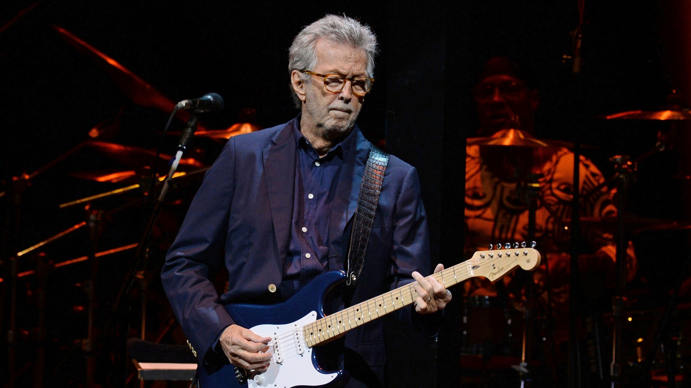
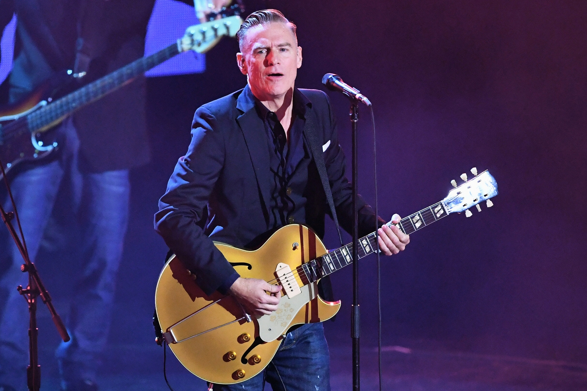

HOME
GUITARIST
PIANIST
DRUMMER
MUSICIANS
CREDITS
ERIC CLAPTON

Eric Patrick Clapton CBE (born 30 March 1945) is an English rock and blues guitarist, singer, and songwriter, widely regarded as one of the most important and influential guitarists of all time. Clapton ranked second in Rolling Stone's list of the "100 Greatest Guitarists of All Time" and fourth in Gibson's "Top 50 Guitarists of All Time". He was also named number five in Time magazine's list of "The 10 Best Electric Guitar Players" in 2009.
After playing in a number of different local bands, Clapton joined the Yardbirds in 1963, replacing founding guitarist Top Topham. Dissatisfied with the change of the Yardbirds sound from blues rock to a more radio-friendly pop rock sound, Clapton left in 1965 to play with John Mayall & the Bluesbreakers. On leaving Mayall in 1966, after one album, he formed the power trio Cream with drummer Ginger Baker and bassist Jack Bruce, in which Clapton played sustained blues improvisations and "arty, blues-based psychedelic pop". After Cream broke up in November 1968, he formed the blues rock band Blind Faith with Baker, Steve Winwood, and Ric Grech, recording one album and performing on one tour before they broke up. Clapton embarked on a solo career in 1970.
Alongside his solo career, he also performed with Delaney & Bonnie and Derek and the Dominos, with whom he recorded "Layla", one of his signature songs. He continued to record a number of successful solo albums and songs over the next several decades, including a 1974 cover of Bob Marley's "I Shot the Sheriff" (which helped reggae reach a mass market),the country-infused Slowhand album (1977) and the pop rock of 1986's August. Following the death of his son Conor in 1991, Clapton's grief was expressed in the song "Tears in Heaven", which appeared on his Unplugged album, and in 1996 he had another top-40 hit with the R&B crossover "Change the World". In 1998, he released the Grammy award-winning "My Father's Eyes". Since 1999, he has recorded a number of traditional blues and blues rock albums and hosted the periodic Crossroads Guitar Festival. His most recent studio album is Happy Xmas (2018).
Clapton has received 18 Grammy Awards as well as the Brit Award for Outstanding Contribution to Music.In 2004, he was awarded a CBE for services to music. He has received four Ivor Novello Awards from the British Academy of Songwriters, Composers and Authors, including the Lifetime Achievement Award. He is the only three-time inductee to the Rock and Roll Hall of Fame: once as a solo artist and separately as a member of the Yardbirds and of Cream.
In his solo career, Clapton has sold more than 280 million records worldwide, making him one of the best-selling musicians of all time.In 1998, Clapton, a recovering alcoholic and drug addict, founded the Crossroads Centre on Antigua, a medical facility for recovering substance abusers.
KNOW MORE!!
Brian Adams

Bryan Guy Adams OC OBC (born 5 November 1959) is a Canadian guitarist, singer, composer, record producer, and photographer. Adams has sold between 75 and 100 million records and singles worldwide, making him one of the best-selling music artists of all time. Adams was the most played artist on Canadian radio in the 2010s and has had 25 Top 15 singles in Canada, and a dozen or more in each of the US, UK, and Australia.
Adams joined his first band at age 15, and at age 20 his eponymous debut album was released. He rose to fame in North America with the 1983 Top 10 album Cuts Like a Knife, featuring its title track and the ballad "Straight From the Heart", his first US Top 10 hit. His 1984 album, Reckless, made him a global star with tracks like "Run to You" and "Summer of '69", both Top 10 hits in the US and Canada, and the power ballad "Heaven", a US number 1 hit. His 1987 album Into the Fire went to number 2 in Canada and the Top 10 in several other countries.
In 1991, Adams's released "(Everything I Do) I Do It for You", which went to number 1 in at least 19 countries, including for 16 and 18 straight weeks in the UK, and Europe overall, both records. It is one of the best-selling singles of all time, having sold more than 15 million copies worldwide. The song was included on Adams' Waking Up the Neighbours (1991), a worldwide number 1 album that sold 16 million copies, including being certified diamond in Canada. Other international hits off the album were the Canadian number 1 songs "Can't Stop This Thing We Started" and "Thought I'd Died and Gone to Heaven". Beginning in 1993, Adams' hits were mostly ballads, including the worldwide number 1 or 2 hits "Please Forgive Me" (1993); "All for Love" (1993); and "Have You Ever Really Loved a Woman?" (1995), the latter two topping the U.S. Billboard Hot 100.
In 1996, Adams' 18 til I Die was a Top 5 album in many countries, but only reached number 31 in the US. He did duets with Barbra Streisand ("I Finally Found Someone" (1996), his last US Top 10 hit) and Melanie C ("When You're Gone" (1998), an international Top 5 hit). In the 1990s, Adams had six European Radio Airplay number 1 songs for 32 weeks, the fourth and third most, respectively; and three number 1 songs on the European Sales Chart for 29 weeks total, the most weeks of any artist.[12] Since 1999, Adams released seven albums, three reaching number 1 in Canada, and most reaching the Top 10 in the UK, Germany and elsewhere.
In 2008, Adams was ranked 38th on the list of all-time top artists on the Billboard Hot 100.Adams has won 20 Juno Awards and a Grammy Award for Best Song Written for a Motion Picture or Television amongst 15 Grammy nominations, and has been nominated for five Golden Globe Awards and three Academy Awards for his songwriting for films. Adams has been inducted into the Hollywood Walk of Fame, Canada's Walk of Fame, the Canadian Broadcast Hall of Fame, and the Canadian Music Hall of Fame. On 1 May 2010, Adams received the Governor General's Performing Arts Award for his 30 years of contributions to the arts.
KNOW MORE!!